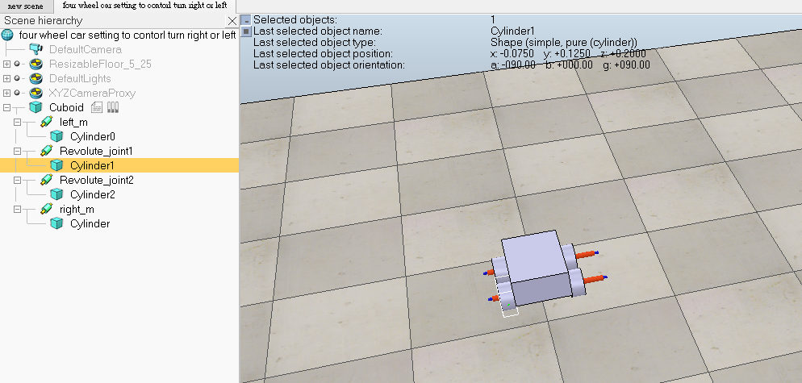

week <<
Previous Next >> week10-week17
week1-week9
week1
建立cd2020個人倉儲和網站(步驟同創建cad2019)
week2
任務:將可攜系統python3.7.3更新到3.8.2
下載網站: https://www.python.org/downloads/windows/
進入後下載 Download Windows x86-64 executable installer
選擇customize installation->將pip取消打勾->路徑選擇自己要安裝的位置
記得保留舊版以便新版發生錯誤可返回舊版
更改start.bat 將路徑改成自己安裝的位置 ex py373->py382
好了後儲存並重新啟動
下圖是已更新為python3.8.2

執行
python get-pip.py
python -m pip install flask flask-cors markdown lxml bs4 pelican leo
好了後可測試python wsgi.py 是否能順利開啟

week3
任務:從 https://www.coppeliarobotics.com/helpFiles/index.html 了解甚麼來實現四輪機器人
翻譯部分放在 downloads
week4-5
Keyboard control car
參考資料:組長
將繪製好的，能直線運行的四輪車導入v-rep
轉好後將零件所對應的相對運動位置依照圖示中的方式排序
設定馬達將電機開啟 (add > joint 中加入所想要的馬達電機)

勾選motor enabled來啟動馬達，調整轉動速度和力矩的參數
勾選lock motor when target velocity is zero則可以使馬達速度為零時鎖定住馬達

動力學屬性設定:物體的碰撞和動態都必須打開，才能使剛剛設定好的馬達對輪胎作動

將撰寫前後左右及加減速程式碼載入v-rep(add > associated> non threaded)

心得:一開始照著v-rep bubble rob的教程來學習這套軟體，鍵盤控制一開始是3D繪圖軟體將零件轉成stl檔案導入v-rep，設定馬達、動力學參數細項等，之後撰寫程式碼來完成鍵盤控制的部分。沒發現摩擦系數相關的設定可能會有打滑現象，可透過設計改良此問題。
week6
task:
1. According to the material of Topic 0 and Topic 1, can you describe specifically what the mechanical design team need to do for accomplishing Assignment 1's four wheeled robot.
2. What do you need to know from https://cyberbotics.com/doc/guide/index to implement a four-wheeled robot?
1.根據主題0和主題1的材料，您能具體描述機械設計團隊為完成分配1的四輪機器人需要做什麼。
2.您需要從https://cyberbotics.com/doc/guide/index 了解什麼 以實現四輪機器人？
翻譯部分放在/downloads/assignment2.pdf
week7
直播影片
前面12分鐘由於帶著耳機沒注意到聲音已經失控，所以花了時間尋找問題，應該是沒有調好輸入音源的關係。直播是使用桌電進行，使用obs加上手機的ivcam連到電腦上的ivcam來配合。
week8
安裝上課老師教的3個模組
1.pip install opencv-python
2.pip install imutils
3.pip install numpy
說明python remote API
抽點影片
week9
期中影片(登入GM帳戶)
week <<
Previous Next >> week10-week17